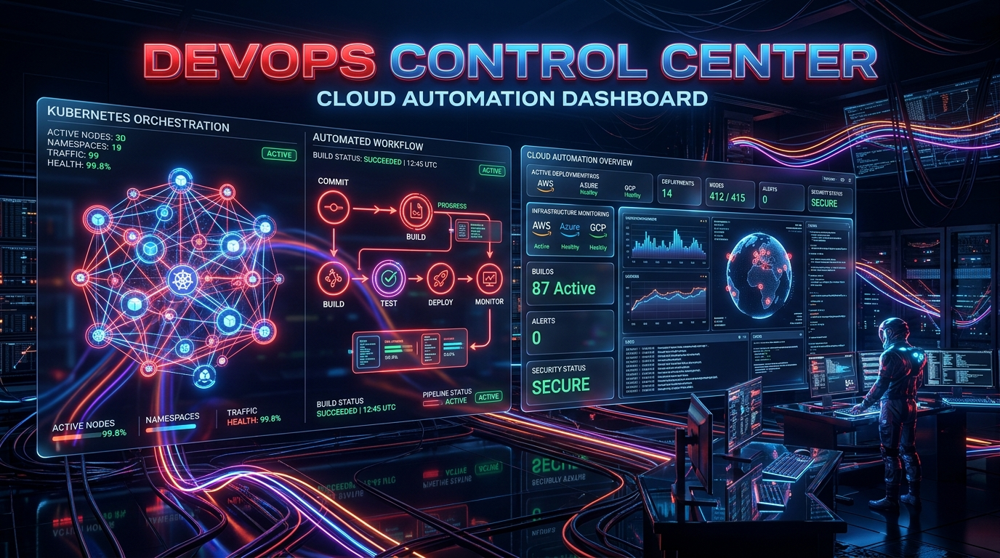
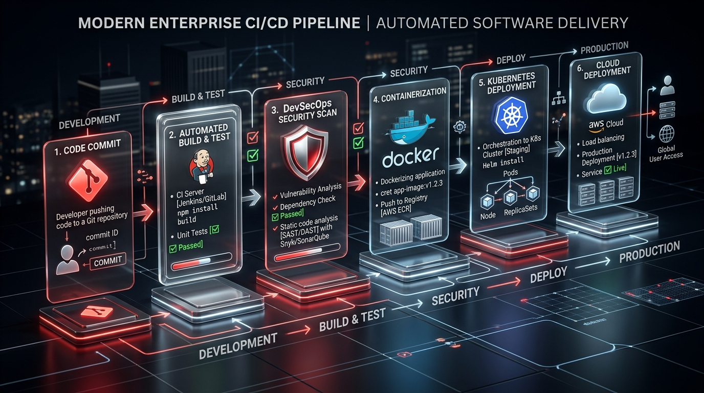

Accelerate Your Software Delivery with Expert DevOps Solutions
At Advanced Operations Technology (AOT), we specialize in transforming your development and operations processes. Our comprehensive DevOps managed services and strategic consulting help your organization achieve faster, reliable, and secure software deployments—driving innovation and growth.

Why Choose DevOps Services with Us?
Our certified expertise and innovative approach transforms your software lifecycle into a scalable competitive advantage.
Certified Excellence
Official DevOps & Cloud partnership ensuring cutting-edge technology access and proven deployment methodologies.
Deep Industry Expertise
Specialized DevOps consultants with proven track records across finance, government, logistics, and enterprise IT.
Tailored Automation
Custom infrastructure strategies and CI/CD pipelines aligned to your unique business targets and tech stack.
End-to-End Journey
Complete lifecycle support from initial infrastructure audit through automated deployment, training, and 24/7 monitoring.
DevSecOps & Compliance
Integrate automated security scans, compliance policy checks, and vulnerability analysis into every build step.
Rapid Time-to-Value
Accelerated deployment methodology ensures quick ROI with measurable performance metrics and cloud cost savings.
Automated CI/CD Pipeline & Delivery Framework
Experience seamless software delivery with our high-resolution enterprise automated pipeline architecture.

Code Commit & Build
Automated trigger upon developer commit with instant syntax validation and unit testing.
DevSecOps Security Scan
Embedded SAST/DAST checks, dependency audits, and vulnerability analysis prior to build approval.
Container & Cluster Prep
Docker containerization and Kubernetes manifest staging with Helm chart validation.
Zero-Downtime Deploy
Automated zero-downtime canary or blue/green deployment across multi-cloud environments.
Our DevOps Services
Comprehensive DevOps implementation and strategic consulting tailored to your enterprise requirements.
Continuous Integration & Delivery (CI/CD)
Build, test, and deploy seamlessly with robust, automated pipelines.
Infrastructure as Code (IaC)
Automate infrastructure provisioning with tools like Terraform, Ansible, and CloudFormation.
Cloud Migration & Optimization
Seamlessly transition to and optimize multi-cloud environments (AWS, Azure, GCP).
Monitoring & Observability
Implement real-time monitoring, alerting, log aggregation, and system telemetry.
Security Automation (DevSecOps)
Embed automated security policies and vulnerability scanners into build steps.
24/7 Managed Operations
Proactive management, incident response, and SLA guarantees for enterprise uptime.
Maturity Assessment & Roadmap
Comprehensive evaluation of current processes to construct a tailored DevOps roadmap.
Toolchain Architecture
Selection, design, and integration of optimal tools customized to your infrastructure.
Automation Best Practices
Establish standardized automation frameworks to eliminate manual bottlenecks.
Culture & Process Enablement
Foster a collaborative DevOps mindset between development and operations teams.
Performance & FinOps Optimization
Fine-tune cloud resource usage and lower operational overhead with FinOps principles.
Team Training & Knowledge Transfer
Empower internal teams with hands-on training and operational runbooks.
Trusted DevOps Partnership
Our certified DevOps architects ensure world-class infrastructure reliability backed by local expertise in Saudi Arabia and the MENA region.
Certified Implementation Engineers
Certified experts in AWS, Azure, GCP, Kubernetes, and Terraform bringing proven methodologies.
Local Market Expertise in KSA
Deep understanding of Saudi enterprise requirements, compliance standards, and data sovereignty.
Accelerated Time-to-Value
De-risk adoption journeys with reusable IaC modules and standardized automation pipelines.
Partner with Us for Measurable Impact
Gain a major competitive advantage, elevate software reliability, and increase engineering efficiency through AOT's DevOps enablement strategies.
- Gain a competitive edge with 10x faster time-to-market.
- Improve quality and reliability of software releases with automated testing.
- Enhance developer productivity and team collaboration.
- Ensure your cloud infrastructure is secure, scalable, and resilient.
Get Started Today
Ready to accelerate your DevOps journey? Contact our experts for a free consultation!